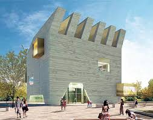
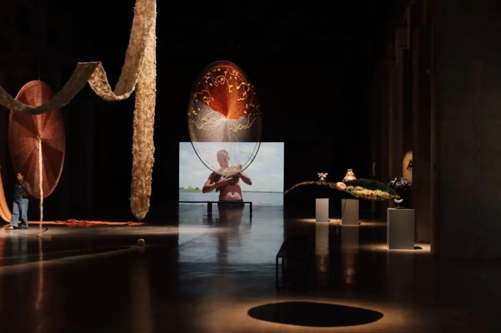
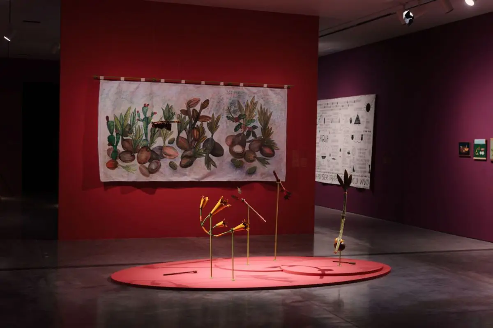
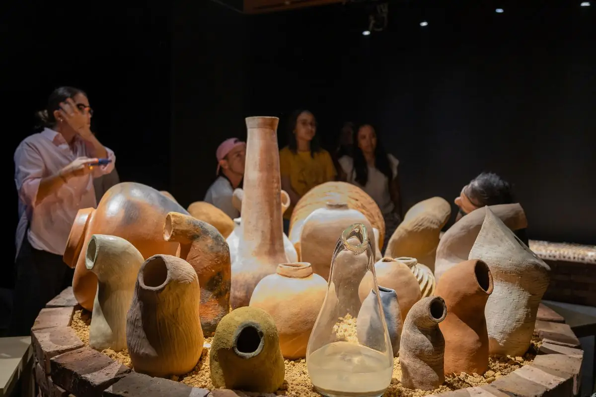

El Museo de Arte Moderno de Barranquilla (MAMBAQ) es una de las instituciones culturales más importantes de la región Caribe colombiana. Desde su creación, ha promovido la difusión del arte moderno y contemporáneo mediante exposiciones, actividades educativas y programas de formación artística.
El museo busca fortalecer la identidad cultural de Barranquilla y acercar el arte a todas las generaciones, convirtiéndose en un espacio de encuentro entre artistas, estudiantes y comunidad.
Promover el desarrollo artístico y cultural mediante la conservación, exhibición y divulgación de obras que fomenten la creatividad y el pensamiento crítico.
Ser un referente nacional e internacional en la promoción del arte moderno y contemporáneo, integrando innovación, educación y participación ciudadana.
MAMBAQ Interactivo combina arte e inteligencia artificial para que niños y jóvenes puedan crear, clasificar y exhibir sus propias obras digitales dentro de un museo virtual participativo.
Exposiciones
Educación
Tecnología
Interactividad



Esperando análisis...
Vista previa de la obra